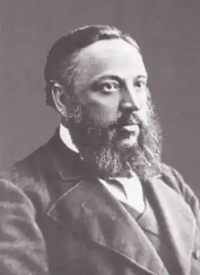
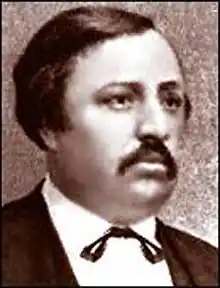
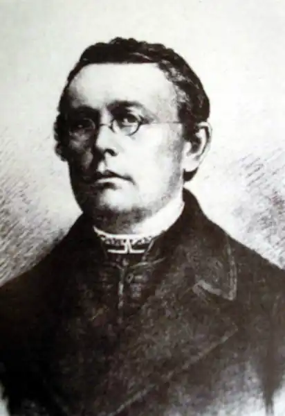

Чубинський Павло Платонович
(1839-1884)
етнограф, фольклорист, поет Народився 27 січня 1839 року на хуторі, що нині входить у межі міста Борисполя поблизу Києва, в сім’ї бідного дворянина. Закінчив Другу Київську гімназію, навчався у Петербурзькому університеті на юридичному факультеті. В студентські роки брав участь у діяльності петербурзької української громади. Був автором журналу "Основа", де познайомився з Т.Шевченком, М.Костомаровим. Після мітингу проти розправи над учасниками варшавської маніфестації Чубинського виключають з університету, і він деякий час живе на Чернігівщині, в селі Ропша. 1861 року захищає в Петербурзі дисертацію "Нариси народних юридичних звичаїв і понять з цивільного права Малоросії" й одержує вчений ступінь кандидата правознавства. Повернувшись в Україну, впродовж 1861—1862 років пише статті для "Основи": "Значення могорича у договорі, господарські товариства, найм робітників", "Український спектакль у Чернігові", "Два слова про сільське училище", "Ярмарок у Борисполі", співпрацює у "Черниговском листке", де публікує матеріал "Декілька слів про значення казок, прислів’їв та пісень для криміналіста", та у "Киевских губернских ведомостях", в яких побачила світ його "Програма для вивчення народних юридичних звичаїв у Малоросії" (1862). У цей час намагається відкрити безплатну сільську школу в Борисполі, але не добився дозволу влади. 1862 року в Києві кілька українофільських гуртків об’єдналися в Громаду, серед перших членів якої були П.Чубинський, В.Антонович, П.Житецький, Тадей Рильський та ін. Проти Громади невдовзі було заведено кримінальну справу, почалося слідство. У вересні того року в Золотоніському повіті поліція виявила прокламацію українською мовою "Усім добрим людям". Тієї осені 1862 року П.Чубинський пише вірш "Ще не вмерла Україна", що став національним гімном українського народу. 20 жовтня шеф жандармів князь Долгоруков дає розпорядження вислати Чубинського "за вредное влияние на умы простолюдинов" на проживання в Архангельську губернію під нагляд поліції. Туди ж висилають громадівця Петра Єфименка та його дружину, історика Олександру Єфименко. Через рік він оселяється в Архангельську, де працює слідчим, потім секретарем статистичного комітету, редактором губернської газети, чиновником з особливих доручень при губернаторі. За сім років заслання в Архангельську українець Чубинський зробив чимало для російської науки, зокрема написав дослідження про ярмарки в архангельському краї, про смертність на Архангельщині, про печорський край, торгівлю в північних губерніях Росії, дослідив юридичні звичаї в губернії та ін. 1869 року йому дозволяють повернутися в Петербург, а потім і в Україну, щоб очолити експедицію в Південно-Західний край для етнографічних та статистичних досліджень. Протягом двох років експедиція досліджувала Київську, Волинську, Подільську губернії, частину Мінської, Гродненської, Люблінської, Седлецької губерній та Бессарабію, де автохтонно проживали українці. Матеріали експедиції увійшли до семитомника, виданого протягом 1872—1879 років. У 1872 році Чубинський засновує Південно-Західний відділ Російського Географічного товариства. У серпні-вересні 1874 року в Києві відбувся III Археологічний з’їзд, що мав велике значення в активізації українознавчих досліджень. 1873 року Російське Географічне товариство нагородило Чубинського золотою медаллю. 1875 року він одержав золоту медаль Міжнародного етнографіч-ного конгресу в Парижі. Почалася кампанія, піднята реакційним українофобським "Киевлянином" проти діяльності громадівців. Помічник попечителя Київського навчального округу М.Юзефович, учасник арештів Т.Шевченка та кириломефодіївців, послав Олександру II донос про українофільство й сепаратизм Громад, що зазіхали "на державну єдність Росії". У відповідь цар видав так званий Емський акт (18 травня 1876 року), який заборонив діяльність українських товариств, видання літератури, театральні та концертні програми українською мовою. Чимало діячів української культури змушені залишити Україну. На початку 1877 року Чубинський знову у Петербурзі, де працює чиновником Міністерства шляхів. У той час він тяжко захворів, у квітні 1879 року йде у відставку й після наполегливих клопотань дістає дозвіл повернутися в Україну. Живе у Борисполі та на своєму хуторі неподалік. 1880 року його розбив параліч, і він до кінця життя був прикутий до ліжка. Помер Чубинський 26 січня 1884 року. Похований у Борисполі. Павло Чубинський працював у надзвичайно складних умовах переслідування царським урядом української культури і за своє недовге життя встиг зробити стільки, що, за висловом його друга і співробітника Федора Вовка, його заслуг вистачило б і на декількох професіональних учених. Один лише вірш "Ще не вмерла Україна" зробив його ім’я безсмертним навіки. Що вже казати про титанічну працю його в галузі етнографії. За словами академіка Л.Берга, експедиція, очолювана Павлом Чубинським у Південно-Західний край, була найвидатнішим явищем в історії тогочасної етнографії. Вже в наш час академік Олександр Білецький писав, що видання етнографічних та фольклорних праць П.Чубинського було надзвичайним фактором у галузі збирання пам’яток. Вражає обсяг і глибина дослідницької праці експедиції, як вражають і ті незліченні скарби народної культури, зібрані в семи томах ( дев’яти книгах) "Праць етнографічно-статистичної експедиції в Західно-Руський край", які вийшли в Петербурзі у 1872—1879 роках. Домогтися від уряду, який вважав, що українського народу, української мови немає й ніколи не було, а є лише південна окраїна Російської імперії і зіпсоване польськими впливами "малороссийское наречие", було вельми складно, а вже здійснити таку широкомасштабну експедицію — й поготів. "Я старався збирати матеріали ще й тому, — писав Чубинський у передмові до першого тому "Праць", — що численні пам’ятки народної творчості вимирають, народ їх забуває. Якби М.Максимович та інші збирачі матеріалів не записали історичних дум і пісень, то багато з них було б назавжди втрачено. Те ж могло б статися з багатьма обрядами, повір’ями, казками, легендами й навіть звичаями; тому й пропускати якусь рису народної творчості чи народного побуту я вважав непрощенним". Чубинський записав майже чотири тисячі обрядових пісень, триста казок, у шістдесяти місцевостях зафіксував і опрацював говірки, звичаї, повір’я, прикмети. З книг волосних та земських судів, староств та управ він вибрав тисячі справ, випадків та ухвал, які б вияскравлювали характерні типи взаємовідносин між людьми, виявляли залишки стародавніх звичаїв, повір’їв, звичаєвого права, дохристиянських вірувань українського народу, їх залишки й органічне поєд-нання староукраїнської, дохристиянської та християнської культур. Він скрізь фіксував рід та характер занять населення, відмінності в обробітку грунту, народні прикмети, за якими регламентується сільськогосподарське життя селянина. Особливу увагу вченого привертали головні події людського життя — народження, одруження, проводи в рекрути, смерть людини, і Чубинський на багатьох яскравих прикладах показав велику естетичну наснаженість і гуманістичну значущість обрядових дійств під час цих подій. Завдяки експедиції Чубинського збереглися матеріали про стан торгівлі в різних місцевостях, бджолярства, тютюнництва, виноробства, шовківництва, броварства. Але найцікавішими в "Працях" експедиції є численні записи свят, в яких найбільше розкривається душа українського народу, його художній геній. Завдяки експедиції Павла Чубинського і виданню її "Праць" нащадкам залишилися прекрасні перли усної народної творчості, які безслідно зникали з наступом цивілізацї, нівелізації національних рис, безвір’я та духовного поневолення. Експедиція Чубинського набула розголосу, й до неї прилучилося багато ентузіастів, які надавали їй свої матеріали. Зокрема, значний внесок зробив І.Новицький, який передав у розпорядження Чубинського п’ять тисяч записаних ним раніше пісень, О.Кістяківський, який надав цінні записи з ухвал волосних судів і додав історичний нарис цієї інституції. В.Антонович зробив виписки з судових процесів минулого століття про відьомство та чаклунство. М.Лисенко поклав на ноти видані у "Працях" мотиви весільних та інших обрядових пісень Бориспільщини. В.Симиренко зібрав рідкісні фотографії народних типів з різних регіонів України, архітектури та улаштування житла. Матеріали надавали також Я.Темненко, Г.Залюбовський, Димінський, Чернецький, Петров, Воронецький, Столбін, Андрієвський, Жданов та ін. "Праці етнографічно-статистичної експедиції в Західно-Руський край" були явищем величезної ваги в історії української культури. Вони показали світові яскраві взірці вияву вроджених якостей духу українців, величну простоту, безпосередність і водночас глибоку емоційність, естетичну наснаженість, силу поетичного чуття, яскравість барв народної поезії та пісні — те головне, що відрізняє український народ серед інших слов’янських народів. Водночас публікація матеріалів експедиції була відчутним ударом по офіційній погодінсько-валуєвській теорії про несамостійність української нації, її мови та культури. Блискуче проведення експедиції зробило ім’я Чубинського відомим і авторитетним в офіційних наукових колах і дозволило йому домогтися від уряду створення Південно-Західного відділу Російського Географічного товариства в Києві., який відіграв визначну роль у збиранні, дослідженні й популяризації фольклорних, історичних, етнографічних та археологічних пам’яток на території України. Усього за кілька років ця наукова установа, яку очолювали, крім Чубинського, Г.Галаган, О.Русов, за кілька років видала два томи "Записок Південно-Західного відділу імператорського РГТ", де опубліковано праці М.Драгоманова, В.Антоновича, П.Чубинського, Ф.Вовка та багатьох інших відомих вчених. Було зібрано матеріалів ще на три томи "Записок". Відділ підготував до видання три томи праць Михайла Максимовича, вперше опублікував українські думи й пісні з репертуару кобзаря Остапа Вересая. Крім того вийшов "Календар Південно-Західного краю на 1873 рік", "Програма для збирання етнографічних та статистичних даних", "Звіт про діяльність Південно-Західного відділу Російського Географічного товариства" за 1873—1874 роки.